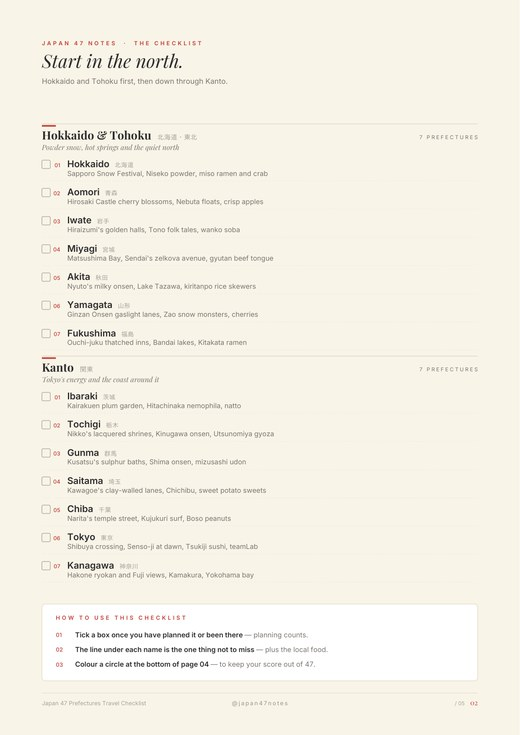

Japan 47 Notes
@japan47notes · Japan travel guide
All 47 prefectures, one at a time. Free checklists and the practical bits — rail passes, data, what to pack — sorted before you fly.
Every prefecture with the one thing not to miss, a box to tick, and a page of travel prep.



Travel prep, booked before you fly
Before you fly: a data eSIM (Airalo or Saily do 7–30 day plans), an IC card for local trains and buses, and a little cash for shrines and rural routes. Then the bits most trips hang on: getting between cities, and what to do once you arrive.
Hokkaido tours, ski & night views › Hakkoda snow & Sukayu onsen day tour › JR EAST PASS (Tohoku area) › JR Hokkaido Rail Pass › Sapporo ramen food tour (2 hours) ›Follow along
One pin per prefecture on Pinterest
#affiliate
Some links on this page are affiliate links. If you book through one, Japan 47 Notes may earn a small commission at no extra cost to you. Klook is the partner for tours, rail passes and tickets. Prices and availability change — always check the dates you want before booking.